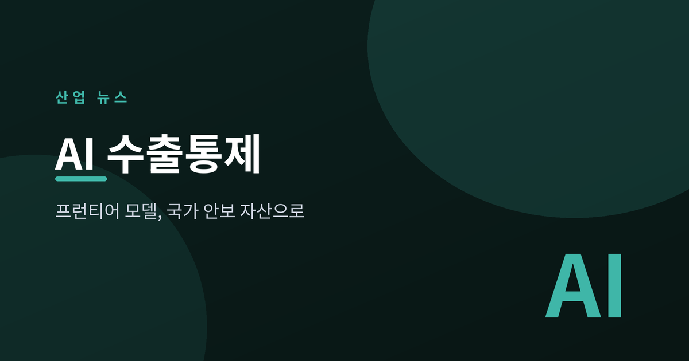
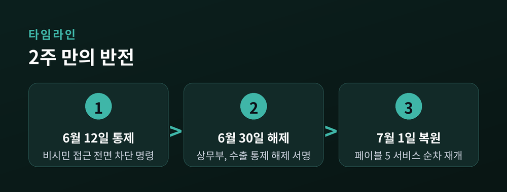
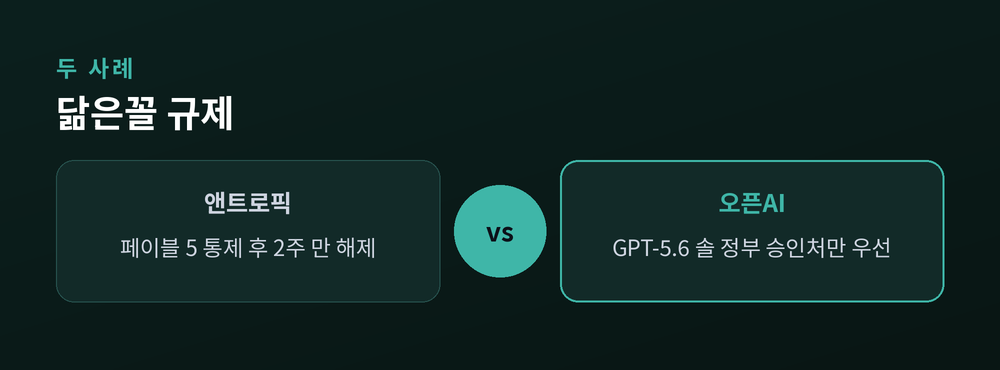
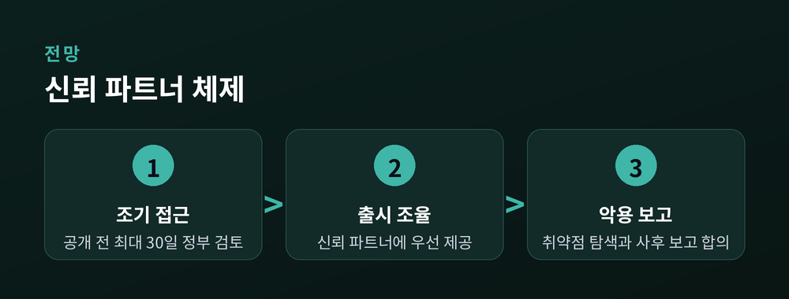

프런티어 모델, 국가 안보 자산으로

첨단 인공지능(AI) 모델이 반도체 장비나 무기처럼 '수출 통제'의 대상이 되는 시대가 열렸습니다. 미국 상무부는 지난 6월 30일 앤트로픽의 최신 모델 '클로드 페이블 5'와 '미토스 5'에 걸었던 수출 통제를 해제했고, 서비스는 7월 1일 복원됐습니다. 불과 2주 반 만의 반전입니다. 프런티어 AI가 이제 국가가 관리하는 전략 기술로 다뤄지기 시작했다는 신호입니다.
발단은 안전성 문제였습니다. 아마존 연구진이 페이블 5에서 안전장치를 우회하는 이른바 '탈옥(jailbreak)' 프롬프트를 발견했습니다. 이에 상무부는 6월 12일, 미국 시민이 아닌 모든 사용자에 대해 두 모델의 접근을 차단하라는 명령을 내렸습니다. 앤트로픽의 비(非)시민 직원까지 포함된 강도 높은 조치였습니다. 이후 상무부는 약 2주간 앤트로픽과 함께 모델을 검토했고, 6월 30일 통제를 풀었습니다. 하워드 러트닉 상무장관이 직접 해제 서한에 서명했습니다. 앤트로픽은 "상무부가 페이블 5와 미토스 5의 수출 통제를 해제했다"며 "클로드닷컴, 클로드 플랫폼, 클로드 코드 등에서 접근을 순차 복원한다"고 밝혔습니다. 대신 회사는 자체 보안 취약점 탐색, 향후 출시 시 정부와의 조율, 악용 사례 보고에 합의했습니다.

이번 사건은 단발성 해프닝이 아닙니다. 뿌리에는 트럼프 행정부가 6월 2일 서명한 행정명령 '첨단 AI 혁신·안보 촉진'이 있습니다. 이 명령은 개발사가 신모델 공개 전 최대 30일간 정부에 우선 접근권을 자발적으로 제공하는 절차를 담았습니다. 같은 흐름이 오픈AI에서도 나타났습니다. 오픈AI는 6월 말 신모델 'GPT-5.6 솔·테라·루나'를 공개하면서, 국가 안보를 이유로 든 행정부 요청에 따라 플래그십 '솔'을 정부 승인 파트너 약 20곳에만 우선 제공했습니다. 국가사이버국장실과 과학기술정책실의 우려가 배경으로 지목됐습니다. 2주 사이 두 건의 프런티어 모델 출시가 모두 정부 조치의 영향을 받은 셈입니다. 국제프라이버시전문가협회(IAPP)는 이를 두고 "정부 명령이 두 프런티어 AI 모델의 상업적 서비스를 중단시킨 사건"이라고 평가했습니다. AI 모델의 성능이 사이버 공격 등 실제 위협으로 연결될 수 있다는 인식이, 규제 지형을 바꾼 것입니다.

행정부는 프런티어 모델을 국가 안보 자산으로 관리하되, 성장의 발목은 잡지 않으려는 절충을 택했습니다. 러트닉 장관은 G7 정상회의에서 '신뢰할 수 있는 파트너'에게 최신 모델의 우선 접근권을 주는 구상을 제시했습니다. 다만 행정명령은 의무적 정부 허가나 사전 심사 제도를 만드는 것은 아니라고 명시했습니다. 강제 라이선스가 아닌 '자발적 조율'이 핵심 설계입니다. 샘 올트먼 오픈AI 최고경영자(CEO)는 GPT-5.6의 제한적 공개를 "단기 조치"로 규정하고, 향후 몇 주 내 전면 공개를 기대한다고 밝혔습니다. 관건은 '사이버 행정명령' 프레임워크가 얼마나 명확한 규칙을 세우느냐입니다. 규칙이 예측 가능하면 기업은 이를 출시 일정에 반영할 수 있지만, 재량적 판단이 반복되면 미국 밖 사용자와 글로벌 서비스의 불확실성은 커질 수밖에 없습니다.

AI의 경쟁력이 이제는 기술력만이 아니라, 정부와의 조율 능력에도 달리게 됐습니다. 모델을 만드는 힘과 그것을 '언제, 누구에게' 열지 결정하는 힘이 분리되기 시작한 것입니다. 다음 프런티어 모델이 공개되는 날, 우리가 함께 확인해야 할 것은 벤치마크 점수만이 아닐지도 모릅니다.
참고 출처: CNBC, Al Jazeera, Forbes, Fox Business, TechSpot, CBC, The White House, IAPP